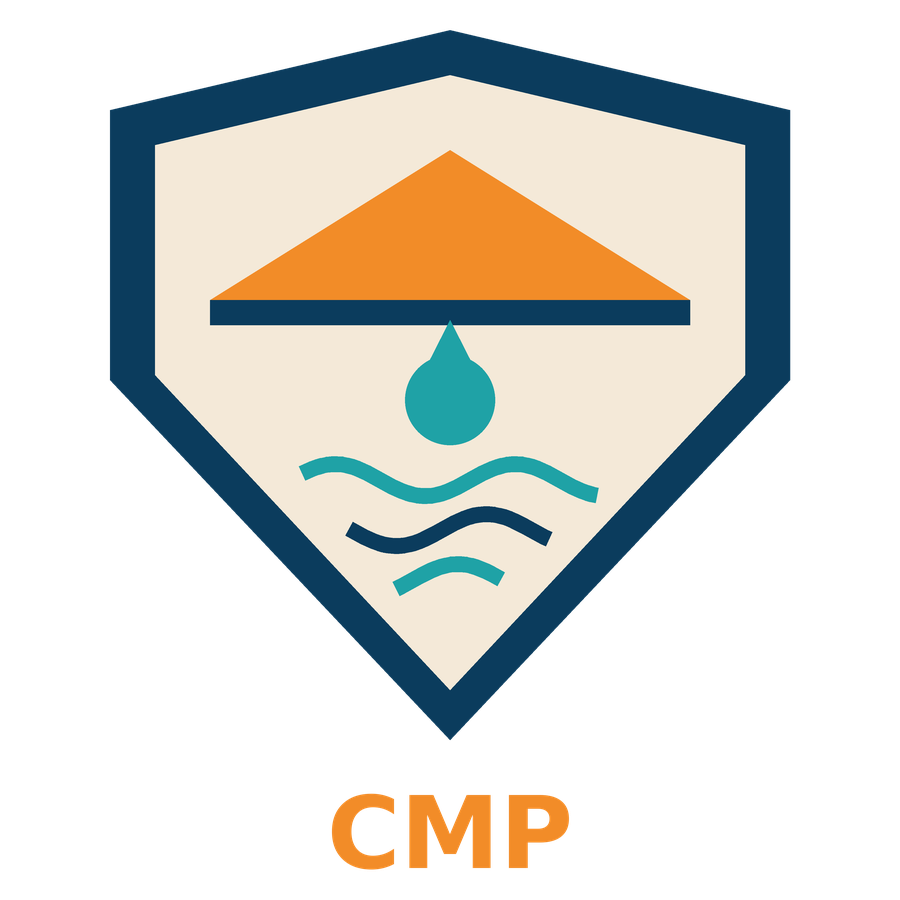

Lluvia repentina
El clima patagónico cambia rápido y las primeras gotas pueden llegar sin aviso.

Secador de Algas CMPEl secador de algas CMP vigila tu secadero las 24 horas y cierra el techo solo cuando cae la primera gota.
Pedí el tuyoEn la costa de Chubut las algas pardas se secan al aire libre. Si llueve o la humedad del mar es excesiva, el producto ya recolectado se pudre y pierde su valor comercial.
El clima patagónico cambia rápido y las primeras gotas pueden llegar sin aviso.
Aunque no llueva, el aire cargado de mar frena el secado y arruina la calidad.
Hoy los operarios tienen que cubrir todo apenas empieza a llover, de día o de noche.
Un sensor de lluvia reconoce el contacto con agua líquida sobre el secadero.
Un sensor de temperatura controla el ambiente y detecta cambios bruscos.
Un servo despliega el techo protector automáticamente, sin que nadie intervenga.
Una alarma sonora y una luz alertan al operador, y la consola muestra todos los datos.
Es un dispositivo autónomo basado en Arduino, pensado para el clima patagónico. La electrónica va dentro de un gabinete protector y solo los sensores quedan expuestos.
$ 99.900
Precio de lanzamiento. Incluye sensores, servo, alarma, gabinete protector y asesoramiento de instalación.
Quiero comprarlo$ 124.900
Precio de lanzamiento. Incluye sensores, servo, alarma, gabinete protector, asesoramiento de instalación y una suscripción en la que por mail le llegarán nuevas novedades, descuentos exclusivos y más.
Quiero comprarlo